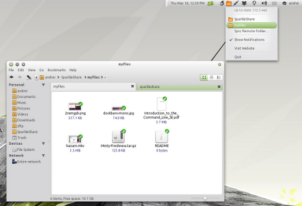

CmisSync
CmisSync allows you to keep in sync with any CMIS-compatible repository, and use your documents even when offline.
It is like Dropbox for Enterprise Content Management!
Available for Linux, Mac, Windows.
CmisSync is currently mostly developed by Aegif, but all contributions are welcome!
The first release of CmisSync will happen before the end of 2012.
Open Source
CmisSync is Open Source software and licensed under the GNU-GPLv3. You are welcome to change and redistribute it, see the license for details.
Get involved!
We are recruiting volunteers! CmisSync is mostly C#, because we re-use the UI from SparkleShare, an excellent Git sync tool. You might find references to SparkleShare in the source code, but please note that CmisSync is not SparkleShare and does not represent it. The build instructions of SparkleShare apply, though ( Linux Mac Windows ).
Here is the plan:
- Write a mock SparkleShare backend for the CMIS protocol
- Implement one-way sync (from CMIS server to desktop)
- Minor UI fixes (SparkleShare icon)
- Implement two-way sync (no merging, just overwrite)
- Maybe custom properties
It should look pretty similar to this:
To begin contributing, get the source and fix the many "TODO" here and here, thanks a lot!
About CMIS
CMIS (Content Management Interoperability Services) is an OASIS standard that allows any ECM client to communicate with any ECM repository (a bit like the HTML standard allows all web browsers to communicate with all web servers). CMIS is backed by all major content management vendors, and is supported by the following ECM servers: Alfresco, Day Software, EMC Documentum, IBM FileNet, IBM LotusLive, IBM Lotus Quickr, eXo Platform, Interwoven, KnowledgeTree, Magnolia, Microsoft SharePoint, NemakiWare, Nuxeo, OpenText, Sense/Net, TYPO3 and many others.